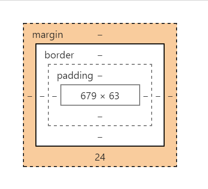
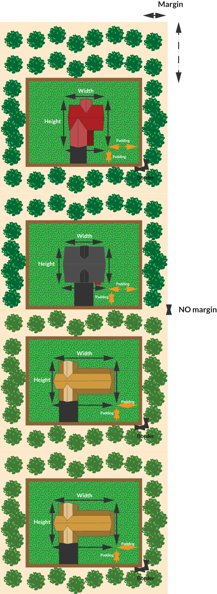

Ive decided to research and write about the CSS box model as its something that I think is absolutely important that you wrap your head if you are wanting to do or make anything in terms of web development. This is because everything, and I mean everything on a website is just a series of boxes. These boxes are then stacked on top and inside of other boxes to make up everything that we see on the internet. Now that wasn’t a very clear explination so lets get into each of the CSS box models properties.
Now because this is just a photo of lots of boxes and I keep saying boxes I’m going to use a house analogy that I really like to help explain what im talking about and stop confusing you. Imagine you live I a rectangular house, and that house has a lawn, and a fence around that lawn and some trees around the outside of the fence.
Your house would be considered what the content of the boxes displayed, and the numbers inside the box represent how big your rectangular house is (note: content could be square just using a rectangle to make the diagrams easier to understand)
Now imagine your houses lawn up until its fence line. This area would be called the padding and the fence line would be your houses border. In the CSS box model the padding is what separates the content you are trying to display from the fence/border that will surround it.
The last part of your house that you need to imagine are the trees that you have planted outside of your fence. Now think about where one of your neighbours houses, with and lawn and a fence and trees of its own, would have to be situated to be next to you. His trees would start where yours hand finished and then would be his fence (border) and then his lawn (padding) and finally his house (content). We want to think of the trees in this analogy as the CSS box models margin. Unless specifically told to, two boxes margins will not overlap they will just position themselves next to each other. (Note: not all boxes have a margin same as not all house have trees outside of them, if this is the case then the boxes margin value is 0 and the elements border/fence will act as the margin)
Hopefully this has given you a better understanding, in what I would consider one of the more important fundamentals in web development, the CSS Box Model.
Thanks for your time, know it was a long one.